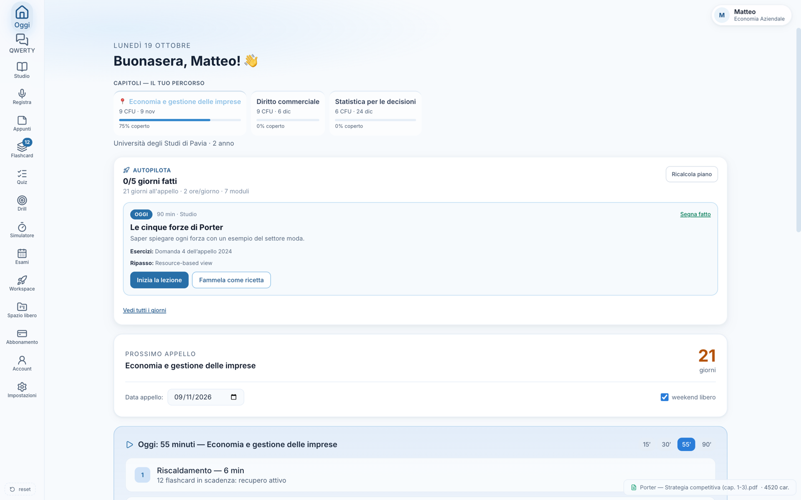
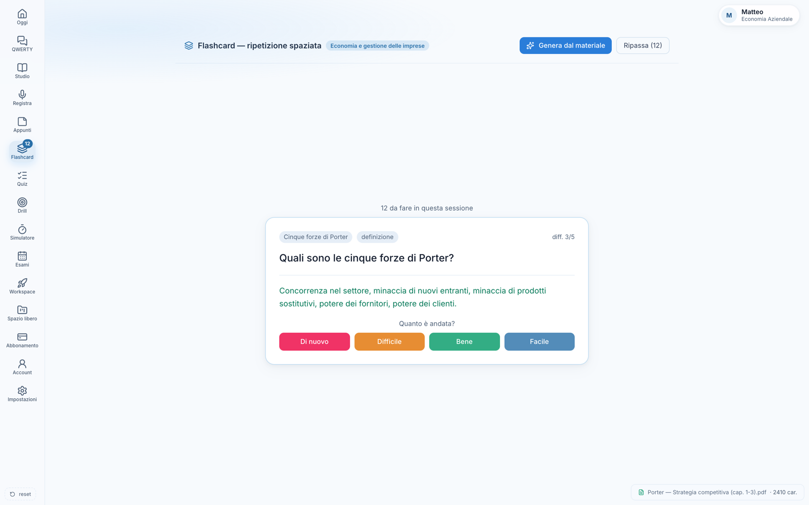

QWERTY, che ti spiega
Spiegazioni, domande socratiche, interrogazione simulata, esercizi guidati. Parte dal tuo materiale e dal tuo programma: sa cosa hai già fatto e cosa no.
Fase alpha · accesso su invito
Nexis prende il programma del tuo corso, la data dell'appello e il tempo che hai davvero: ne esce cosa studiare oggi, cosa ripassare prima che tu lo dimentichi, e dove sei indietro. Tutto su misura del tuo ateneo, non di uno studente generico.
Mac e Windows · nessun abbonamento attivo in fase alpha

Non sei app da tenere aperte insieme. Nexis le sostituisce perché le fa parlare tra loro: il materiale alimenta le flashcard, le flashcard alimentano il piano, il piano decide la lezione di oggi.
Spiegazioni, domande socratiche, interrogazione simulata, esercizi guidati. Parte dal tuo materiale e dal tuo programma: sa cosa hai già fatto e cosa no.
PDF, slide, Word, appunti registrati a lezione. Nexis estrae il testo, lo organizza e lo rende interrogabile: niente più «quel paragrafo dove era?».
Il calendario del mese, una casella per giorno. Se salti, quello che non hai fatto torna nei giorni che restano. In ordine, senza accumuli, fino all'appello.
Ripetizione spaziata seria (SM-2). E i mazzi Anki che hai già si importano in un minuto: 2.000 card non ricominciano da zero. Esporti quando vuoi, senza restare prigioniero.
Domande sul tuo programma, correzione con spiegazione, voto indicativo e piano di recupero. Se hai una prova del professore, la simulazione nasce con quella forma e quella difficoltà.
Pomodoro integrato, pause che ti dicono qualcosa di sensato, sessioni che entrano nelle statistiche e nel piano. Costanza, non forza di volontà.
Ateneo, corso, esame, data dell'appello, quanto tempo hai al giorno. Se il tuo corso è tra quelli censiti, Nexis parte dal piano di studi ufficiale (CFU compresi).
Il PDF delle slide, gli appunti, il programma del docente. Nexis lo legge e costruisce il percorso: moduli, flashcard, quiz, lezioni.
Ogni giorno trovi la prossima azione giusta, non un elenco infinito. Spunti quello che fai; il piano si adatta al tuo passo reale.
Ogni card ha una «forza di memoria»: se la ricordi bene torna tra settimane, se la sbagli torna domani. È lo stesso principio di Anki, applicato alle card nate dai tuoi materiali.
Nel pomeriggio prima dell'esame non ripassi tutto: ripassi quello che il tuo cervello sta per perdere.

Le altre app sono fogli bianchi: belli, ma la manutenzione è un lavoro che nessuno vuole fare. Nexis conosce l'università italiana — CFU, propedeuticità, appelli, orari — e lavora su quello.
Salta due giorni? Non ricominci da capo e non ti ritrovi venti compiti arretrati. I compiti non fatti si ridistribuiscono sui giorni che restano, in ordine. Se il programma non entra più, te lo dice invece di nasconderlo.
Importi .apkg, .colpkg, CSV o testo — anche le card cloze. Esporti un file che Anki riapre. Nessun lock-in: i tuoi contenuti restano tuoi, sempre.
Carichi il compito vero del docente: Nexis ne ricava una prova equivalente — stessa forma, stessa difficoltà, stessi argomenti — ma con domande nuove. Ti alleni sullo stampo reale, non su un quiz generico.
Inserisci l'orario una volta: le lezioni compaiono accanto ai compiti del giorno. Vedi a colpo d'occhio quando hai lezione e quando devi studiare.
Nexis è in prova. Invece di un pulsante «Scarica» che porta a un file che non funziona, preferiamo dirtelo: le versioni circolano su invito, una persona alla volta, così possiamo sistemare le cose prima che diventino un problema per te.
Serve un Mac (Apple Silicon o Intel) o un PC Windows. Ti arriva il programma, un codice di attivazione e le istruzioni: cinque minuti.
Le richieste vengono lette una per una. Non c'è una lista d'attesa automatica.
Questo sito non usa cookie, non ha tracker, non profila nessuno: è una pagina statica. Nell'app, materiali e appunti restano sul tuo dispositivo; ciò che serve per ritrovare il profilo su un altro computer viaggia in forma cifrata verso il tuo account.
Nexis è uno strumento di studio: non sostituisce le lezioni, non è affiliato ad alcun ateneo, e non produce valutazioni ufficiali.
Nessun cookie
Nessun banner, perché non c'è niente da consentire.
Nessuna pubblicità
Non vendiamo attenzione: non c'è un modello pubblicitario.
Esporti tutto quando vuoi
Profilo, esami, flashcard e appunti in un file.